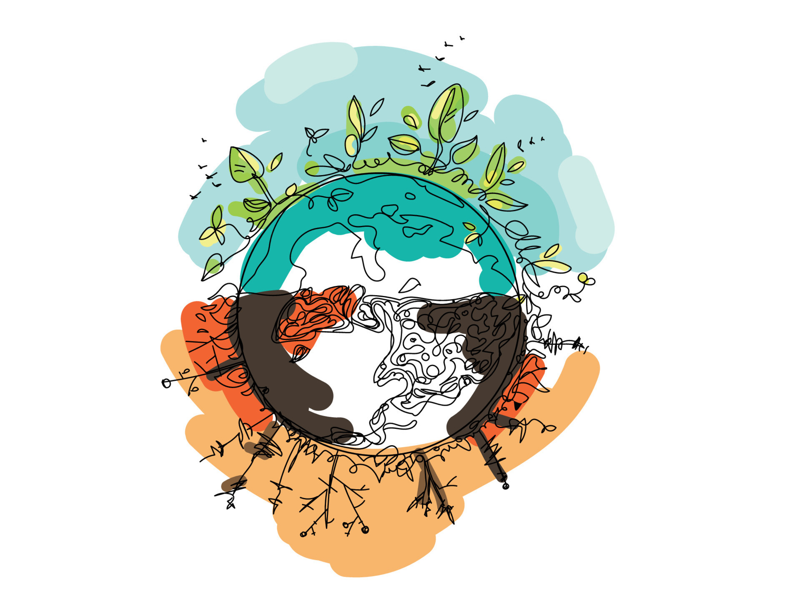

Plastic is everywhere around us, in ground and in ocean. There is 8
million tons of plastic only in oceans, let alone landfills. And in the
upcoming years, we will have plastic more than fish in the ocean. That’s
why it is necessary to take an action!
The goal of earthy. is to help you track your plastic usage to be more
conscious about your plastic footprint and start reducing it.
Recycling alone is not enough, since only 5-10% of the world plastic is
recycled. Most of it end up in landfills and oceans. Plastic can take
years and years to decompose. Scientists estimate that plastic can take
more than 500 years to degrade, but for the specific items this time can
be shorter:
- plastic bag 10-1000 years
- grocery bag 10-20 years
- foam plastic cup - 50 years
- plastic disposable cup, plate - 400 years
- disposable diaper - 450 years
- plastic bottle - 450-500 years
Let's try to make the world more sustainable by spreading out
the 4 R’s rule:
The 4 R's rule: Refuse, Reduce, Reuse, Recycle.
-
Refuse - turn down all disposable plastics, such as coffee
cups, straws, plastic bags, single-use cutlery, and stirrers. You are
using it for seconds or minutes, but it will outlive you by a couple
hundred of years.
-
Reduce - choose the products with the least possible plastic
waste: choose paper-wrapped products over those packaged in plastic, buy
biodegradable cotton swabs instead of the plastic ones (this innocent
stick is one of the top ten forms of beach litter, polluting the oceans)
and avoid plastic microfibres in things like synthetic clothing.
-
Reuse (and repurpose) - use plastic containers as many times as
possible. Take your lunch in a Tupperware-type box, reuse your
non-toxic, durable straw, take a plastic bottle with you. Repurpose old
plastic stuff - awaken your inner child and create a cool flower pot or
a bird feeder.
-
Recycle - if the options above don't work, stick to the last
one. Recycling plastic (and other materials) should be our everyday
habit. Buy products which are made of recycled materials, choose ones
which are easy to recycle, and rinse your waste before throwing it into
a recycling bin to avoid waste contamination, which makes recycling
impossible.